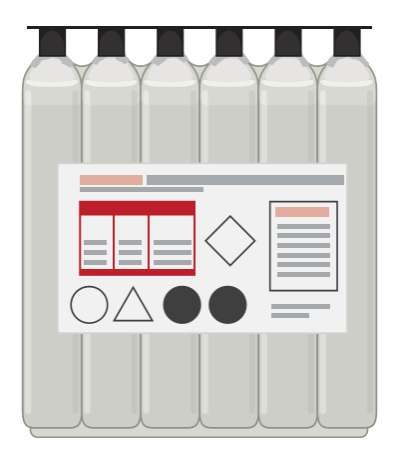

Some batteries are sold dry, with a separate pack of acid and a seal over the cell openings. They keep indefinitely while sealed, but start to age the moment they are filled. Others come pre-filled and charged. A pre-filled battery that has sat on a shelf for a month or so should be recharged before use.
Battery acid is strong sulfuric acid. It burns skin and eyes and eats clothes. Do this job with care or leave it to a battery seller.
Safety
- Wear eye protection and gloves. Work outdoors or in good air.
- Keep a bucket of water and baking soda mixed with water close by. Baking soda neutralises acid. Water rinses it off.
- Charging gives off hydrogen. Keep flames and sparks away.
- Never put salt water near battery acid.
- Do not charge a frozen battery. Let it warm up first.
- Follow the instructions that come with the battery over any general guide here.
You need
- The battery and the acid pack supplied for it.
- A charger that suits that type of battery, set to the right current.
- Distilled water for later top-ups.
Steps
- Read the maker's instructions on the pack.
- Remove the seal or strip from the battery. Look for the air sound as it opens.
- Fill each cell with the acid from the pack, to the upper level line. On a sealed-lid battery the pack fits into the cells, as shown in the instructions.
- Wait the time stated in the instructions. Tap the battery lightly to release air bubbles.
- Put on the cap or fit the fixed sealing strip as instructed. Do not use the old seal again.
- Connect the charger: red clip to positive (+), black to negative (-). Set the charge rate to the battery label.
- Charge for the time in the instructions. For a flooded battery, charge until the cells are gassing freely, then stop. Stop earlier if the case gets hot.
- Switch off the charger before taking off the clips.
- For a flooded type with caps: loosen the caps once during charging so the vent can clear, check the vent tube is clear, then tighten the caps before fitting.
- Wipe the case clean. Let it rest, then measure the voltage: Test and charge a 12 V battery.
- Fit the battery: Replace a 12 V battery.
Check your work
- Voltage after resting matches a full battery for that type.
- No acid on the outside of the case. Rinse spills with water and baking soda.
- Vent tube is clear and not kinked.
If it did not fix the problem
- Battery will not take charge: A new battery goes flat quickly.
- If you are changing from a flooded to a sealed type, check the bike's charging system can charge it: Test the charging system.